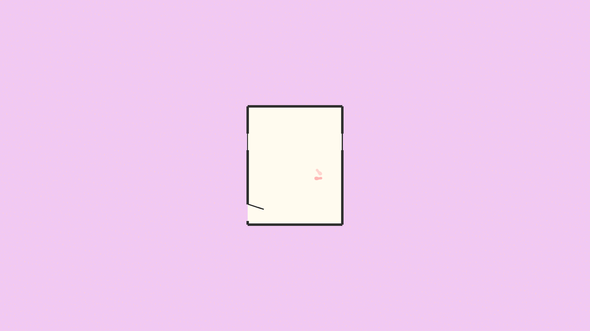
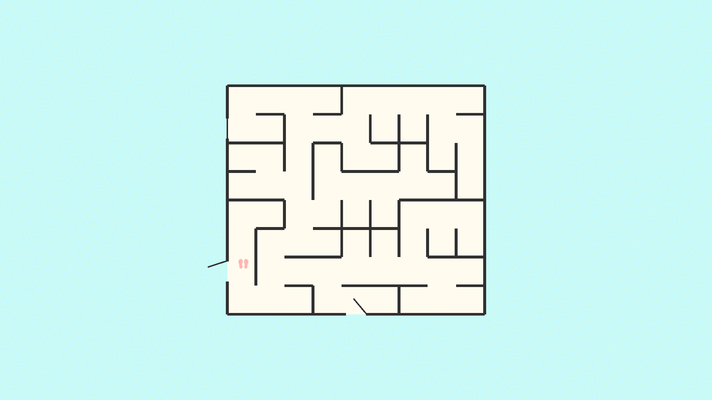

Oikos is a small game about escaping. The player starts inside a house with a few visible rooms and a door leading into the unknown. As the player tries to exit the house, they find themselves in a labyrinth of sorts: a series of procedurally generated rooms, corridors and mazes, connected in architecturally impossible ways. Thus, the player must navigate this environment and look for an exit.
 With this game, I attempted to evoke certain feelings, making the player feel lost, trapped and overwhelmed. I played with the idea of mixing handmade content (like the starting room, creating an initial sense of stability and normalcy) and procedurally generated content, growing in complexity as the game goes on, and escalating tensions and inducing some anxiety.